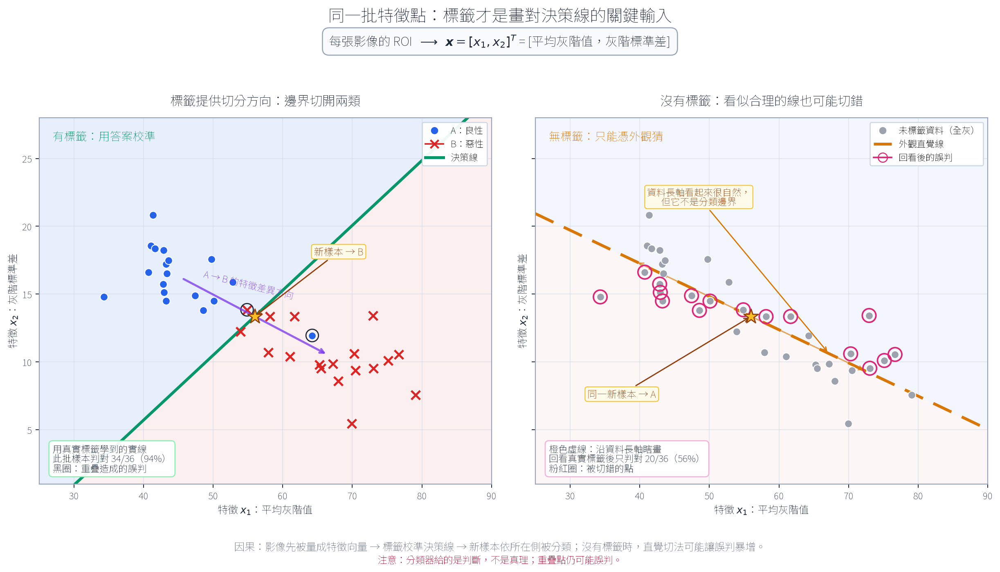
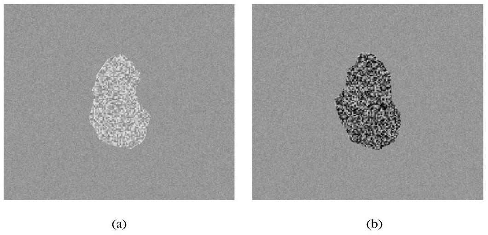
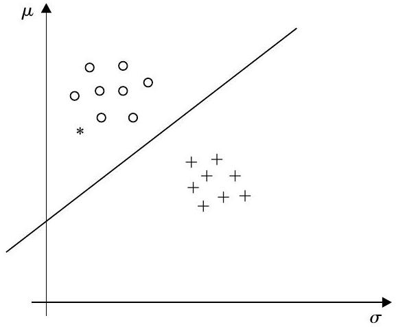
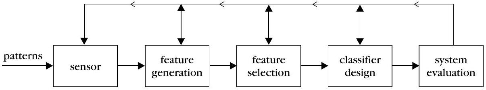
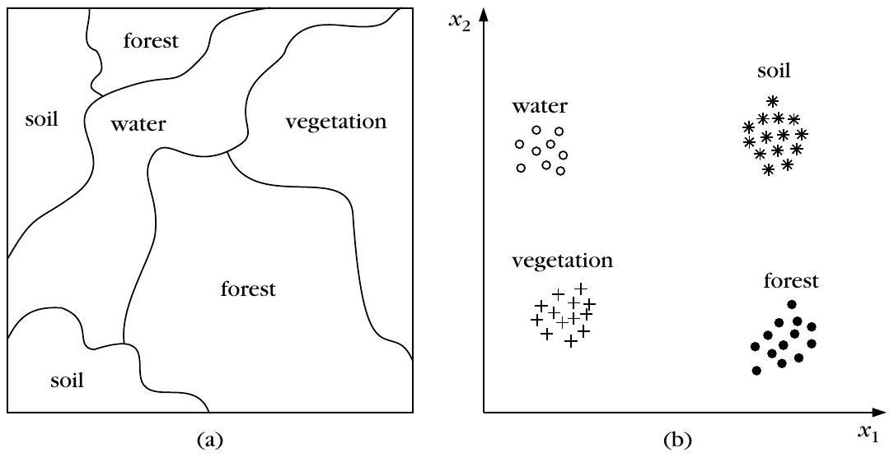

為什麼要學樣式識別？（五大應用領域）
▼🤖 AI 生圖可用：重繪此示意圖的提示詞（結構化）
WHAT: Draw a wide, self-contained educational SVG infographic. Five visibly different raw inputs enter from the left: a factory camera inspecting parts, a scanned document with handwriting/OCR strokes, an X-ray or lesion image, a speech waveform, and a data/DNA similarity record. These five streams must physically converge through one funnel-like feature-extraction stage, become the same kind of compact numeric representation, and then enter one shared classifier shown as a 2-D feature plane with a visible decision line and two output classes. Include a point near the decision boundary to show that a classification rule can be uncertain or wrong. WHY: The causal mechanism is not that five applications happen to share vocabulary. Their different-looking inputs become comparable only after feature extraction; those measured features are the input that makes a common classification decision possible. The counter-intuitive turn is that the common intelligence is hidden in the middle conversion, not in the surface modality. Even after conversion, the decision line is a rule rather than a guarantee, so a boundary-near sample can be misclassified. MUST show: - Five distinct geometric input glyphs and labels, with arrows that visibly converge rather than five isolated boxes. - A central funnel, compression, or merging geometry labelled feature extraction, with several raw streams narrowing into a shared numeric representation. - A shared feature-vector or feature-plane representation with points/axes, not only a text label. - One downstream classifier decision line that divides two regions and sends them to two class outputs. - A boundary-near point with a ring or warning cue for possible misclassification. - A strong visual hierarchy: the shared middle pipeline must be more prominent than the five application examples. AVOID: Do not make five unrelated icon cards with no physical convergence. Do not use a noun-to-box flowchart, decorative stock medical imagery, or a generic AI brain. Do not imply that raw images, waveforms, or records are classified directly without feature extraction. Do not hide the decision geometry behind paragraphs, use external images/fonts/resources, or imply perfect accuracy. STYLE: Clean offline SVG scientific infographic, logical viewBox coordinates, white and light-gray background, #0891b2 accent with grayscale, crisp arrows and geometric icons, restrained typography, generous whitespace, and textbook-level clarity.
一句話：樣式識別（pattern recognition）是「把物件分類到某個類別」的科學，1960 年代前多半是統計學的理論研究，電腦普及後才變成今天工程界的當紅學科。
為什麼重要：社會從工業時代走向後工業時代，自動化與資訊檢索的需求爆炸性成長，樣式識別因此變成幾乎所有「機器智慧決策系統」的核心零件。
五個代表性戰場：
- 機器視覺：相機拍下影像 → 判斷「有沒有瑕疵」（產線檢測）或「這是什麼零件」（自動組裝）。
- 文字辨識（OCR）：光學掃描 → 影像處理切字 → 分類成「字母/數字/標點」。存成 ASCII 比存整張掃描影像更省空間、也更方便後續編輯；手寫辨識更進一步應用在支票金額辨識、郵遞區號分類、筆式電腦輸入。
- 電腦輔助診斷：例如乳房 X 光攝影，10–30% 罹病患者會被誤判為陰性，其中三分之二事後回看其實影像上已有跡象——這正是「找第二意見」的樣式識別系統存在的理由。
- 語音辨識：把麥克風收到的聲音樣式轉成 ASCII 文字，用說話輸入資料比熟練打字快兩倍，也能幫助聽語障人士。
- 資料探勘與知識發掘：從「用關鍵字比對」的傳統檢索，走向「用相似度比對」的 content-based retrieval（例如 CBIR 影像檢索、音樂旋律比對、DNA 序列相似性搜尋）。
怎麼記：這五個例子背後其實只有一件事——先想辦法量出一些能區分類別的數字（特徵），再交給分類器判斷。這就是後面每一節要拆解的主題。
以下哪一項不是本節提到的樣式識別應用？
為什麼 OCR 系統把辨識結果存成 ASCII 文字、而不是直接存掃描影像？
特徵、特徵向量與分類器
▼
🤖 AI 生圖可用：重繪此示意圖的提示詞（結構化）
WHAT: Create a two-panel quantitative scatter plot for medical-image classification. Use the same deterministic set of feature vectors in both panels. The x-axis is mean gray-level value and the y-axis is gray-level standard deviation; each image is one point x = [mean, standard deviation]^T. In the left panel, show benign class A as blue circles and malignant class B as red crosses, then draw a solid decision line learned from the true labels. In the right panel, remove all class colors so every training point is gray, and draw a dashed orange line that follows the visually dominant diagonal of the unlabeled cloud as a plausible but wrong guess. Put the same gold-star unknown sample in both panels so its predicted class can visibly change with the boundary. WHY: The true class labels are the causal input that lets a classifier discover a boundary between classes. Without labels, a person can mistake the long axis of the point cloud for the separating boundary: the line may look geometrically reasonable while cutting through many points from both hidden classes. The counter-intuitive lesson is that a decision line is not revealed by appearance alone, and even a label-aware line is a rule with possible misclassification, not a guarantee of truth. MUST show: - Exactly the same point coordinates in both panels; only the left panel reveals class colors and markers. - Quantitative axes labelled mean gray level and gray-level standard deviation. - A visible feature-vector notation such as x = [x1, x2]^T. - A solid label-aware decision line on the left, with lightly tinted predicted regions and a small accuracy count for this sample set. - A dashed unlabeled guess on the right that follows the cloud's long diagonal, with many error points circled after the hidden labels are revealed. - The same gold-star new sample in both panels, with the two boundary-based predictions called out. - A visual distinction between overlapping points that can still be misclassified and the larger failure caused by the unlabeled guess. AVOID: Do not make a noun-to-box flowchart, generic neural-network diagram, or decorative medical illustration. Do not change the data between panels, hide the axes, use an arbitrary line with no visible consequences, or imply that classification is always correct. Do not use only text labels to explain the cause; the point geometry, line orientations, tinted sides, and circled errors must carry the argument even when labels are covered. STYLE: Clean flat scientific matplotlib-style infographic, white background, restrained blue/red/orange/purple palette, high-contrast markers, precise geometry, readable Chinese typography, and enough whitespace for an undergraduate self-study textbook figure.
一句話：把「量測到的可分辨數字」叫做特徵（feature），把 $l$ 個特徵排成一支向量 $\boldsymbol{x}=[x_1,x_2,\dots,x_l]^T$ 就是特徵向量，而負責把特徵空間切成不同類別區域的規則，叫做分類器（classifier）。

動手做一次（醫學影像簡化範例）：假設兩張影像裡各有一塊感興趣區域，一塊來自良性病灶（類別 A），一塊來自惡性病灶（類別 B）。第一步不是直接比對影像，而是先找「量得出來、又能分辨兩類」的數字——這裡選用區域內的平均灰階值與灰階標準差兩個特徵。

分類器怎麼來的：圖中那條直線叫決策線（decision line），它就是分類器本體——把特徵空間切成「屬於 A」與「屬於 B」兩塊區域。畫這條線時我們其實偷看了答案：每個點的真實類別（A 或 B）事先已知，這種「類別標籤已知、拿來設計分類器」的樣本叫訓練樣本（training pattern）。新來的星號樣本落在哪一區，就被判給哪一類——但這只是「判斷」，不保證正確，判錯了就叫誤判（misclassification）。
四個接下來要面對的問題（本例只是最簡化的示範，真實情況要嚴肅回答）：
- 特徵要怎麼生成？本例投機取巧地用了平均值/標準差，實務上往往不知道該量什麼——這是「特徵生成」階段的工作。
- 該用幾個特徵最好？通常會先生成一大把候選特徵，再挑出「最好用」的子集合——這是「特徵選擇」階段。
- 分類器的邊界該怎麼畫？本例是憑感覺目測畫的直線，實務上要依某個最優準則計算出來，而且大多數問題的分界面根本不是直線（超平面），而是非線性曲面——這是「分類器設計」階段。
- 設計完之後，準不準？要有系統性方法評估錯誤率——這是「系統評估」階段。
操作說明與正確結果基準
- 這在做什麼：把每張醫學影像化成「平均灰階值、灰階標準差」兩個特徵，觀察 LDA 決策線與無標籤主軸猜測線如何切分同一批資料。
- 怎麼操作：拖曳藍色圓點（A 類）或紅色叉號（B 類）；每個點移動後，兩條線與各自準確率都會即時重算。
- 觀察什麼：把某個點拖到另一類附近，觀察兩條線的判斷是否不一致，以及「用真實標籤」與「只看資料外觀」的準確率如何改變。
- 正確結果基準：LDA 使用標籤計算共用類內共變異數；PCA 主軸只使用全部點的位置，不讀取類別標籤。
無標籤猜測：$C=\dfrac{1}{N-1}\sum_i (x_i-c)(x_i-c)^T$ 是全部點的共變異數矩陣， $u_1$ 是其最大特徵值 $\lambda_1$ 對應的特徵向量；猜測線通過 $c$、方向為 $u_1$，依點落在線的哪一側分類。
特徵向量 $\boldsymbol{x}=[x_1,x_2,\dots,x_l]^T$ 裡的上標 $T$ 代表什麼？
圖 1.2 中的決策線是依據什麼資訊畫出來的？
分類系統設計的四個階段
▼🤖 AI 生圖可用：重繪此示意圖的提示詞（結構化）
WHAT: 以一個大型、非直線的迭代流程圖呈現分類系統設計：四個階段「特徵生成 → 特徵選擇 → 分類器設計 → 系統評估」沿著弧形主要路徑前進；系統評估位於右側，從它拉出粗虛線回饋弧，繞回特徵選擇，另以較淡的支線表示必要時回到特徵生成。特徵選擇與分類器設計被同一個虛線框包住，框內有雙向連動箭頭，表示可合併成共同最佳化問題。每個階段都要有小型幾何示意：原始訊號變成候選特徵、很多候選被篩成少數、有兩群資料與彎曲決策邊界、測試資料出現錯分與泛化落差。 WHY: 必須傳達「四階段不是獨立的流水線，而是由評估結果驅動的修正迴圈」。反直覺轉折是：系統評估不是終點；當新資料上的錯誤率不理想時，評估結果會成為回饋訊號，迫使設計者回頭改特徵選擇，甚至重新生成特徵。另一個因果重點是，特徵選擇與分類器設計可能互相牽制，因此可被放進同一個最佳化任務。 MUST show: - 四個階段仍依序可讀，主要前進箭頭使用實線。 - 從「系統評估」返回「特徵選擇」的粗虛線回饋弧，旁邊明確標出「錯誤率不理想」與「回頭修正」。 - 一條較淡的回饋支線指向「特徵生成」，表示問題可能必須回到更早階段。 - 特徵生成的波形／候選量測、特徵選擇的多到少篩選、分類器設計的兩群點與彎曲邊界、系統評估的訓練／新資料對照與錯分標記。 - 特徵選擇與分類器設計外有虛線共同框，並標示「可合併為單一最佳化問題」。 - 中央有循環箭頭或迭代符號，強化評估會啟動下一輪設計，而非流程結束。 AVOID: - 禁止只畫四個名詞方框加一條由左至右的單向箭頭。 - 禁止把回饋箭頭畫成細小、裝飾性或難以辨認的線；回饋必須是主視覺之一。 - 禁止用直線分隔線取代分類器的決策邊界，也不要暗示分類器永遠是線性的。 - 禁止把特徵選擇與分類器設計畫成完全獨立、沒有互相影響的步驟。 - 禁止使用公式、外部圖片、外部字體、過度寫實的 AI 場景或無法離線渲染的素材。 STYLE: 扁平、清楚、教科書式的向量資訊圖；白底，以 #0891b2 青色作為主要強調色，搭配深灰與淺灰，線條俐落、留白充足，讓遮住所有文字後仍能看出「篩選 → 建界 → 測試 → 回頭修正」的因果迴圈。
一句話：一個完整的分類系統設計，會依序（但常常互相回頭修正）走過特徵生成 → 特徵選擇 → 分類器設計 → 系統評估四個階段。

四階段各自在問什麼：
- 特徵生成：這個問題該量測什麼數字？（上一節的平均值/標準差就是特徵生成的產物）
- 特徵選擇：候選特徵一大堆，哪幾個才是「精華」？多數情況會先生出比需要更多的候選特徵，再挑最好的子集合。
- 分類器設計：拿到選定的特徵後，怎麼找出「最優」的分界規則？上一節的直線是憑感覺畫的，但真實世界裡多數問題無法用直線（或超平面）漂亮分開，必須考慮非線性分界面——用什麼形式的非線性、用什麼準則去優化，都是這階段要回答的。
- 系統評估：分類器做出來之後，錯誤率到底多少？要用有系統的方法量化效能，而不是憑印象。
反直覺之處：這四階段不是流水線，是迴圈。實務上常常做到某一階段發現效果不好，就要回頭修正更早的階段——甚至有些方法乾脆把「特徵選擇」和「分類器設計」合併成同一個最佳化問題一起解。把它想成線性流程反而會誤導。
分類系統設計四階段的正確順序是？
為什麼說這四個階段「不是各自獨立」？
監督式、非監督式與半監督式學習
▼🤖 AI 生圖可用：重繪此示意圖的提示詞（結構化）
WHAT: Create a three-panel SVG infographic using exactly the same two-dimensional point coordinates in every panel. Panel 1 is supervised learning: every point has a visible class marker/color and a solid decision boundary separates the two classes. Panel 2 is unsupervised clustering: every point is the same gray, distance-based cluster contours and proximity links form groups, and a close pair is visibly flagged as a possible concept mix-up. Panel 3 is semi-supervised learning: only a few anchor points have class labels, the remaining points are gray, cyan solid must-link arrows pull compatible points toward one group, and a cannot-link pair has an explicit crossed connection plus outward push arrows. WHY: The causal variable is not the point geometry; it is the information available during training. With complete labels, the model can learn a class boundary. With no labels, similarity alone can merge points that are close but conceptually different. The counter-intuitive turn is that a small amount of supervision is enough to redirect the distance-based process: must-link and cannot-link constraints inject just enough semantic information to repair a bad grouping without labelling every point. MUST show: - The same point coordinates, axes, and feature-plane layout in all three panels. - Supervised panel: all points labelled with two visibly different markers, plus a clear decision line and two sides/classes. - Unsupervised panel: all points gray, no hidden class colors, geometric cluster contours or proximity links, and a highlighted near pair labelled as a possible mixed concept. - Semi-supervised panel: only a small number of labelled anchor points; all other points remain gray. - Solid must-link lines/arrows that visibly pull points into the same cluster. - A cannot-link relation drawn as a crossed or forbidden connection with outward push arrows, not merely a text label. - A final visual cue that few constraints can substantially change the grouping. AVOID: Do not draw three unrelated point clouds, change point locations between modes, or replace the point geometry with a generic three-column vocabulary chart. Do not show class colors in the unsupervised panel, label every point in the semi-supervised panel, or depict must/cannot-link as inert legend text. Do not imply that nearest distance always reveals the true concept, and do not use external images, fonts, scripts, or resources. STYLE: Clean offline inline SVG scientific infographic, logical viewBox coordinates, white and light-gray panels, #0891b2 accent with grayscale, crisp arrows, subtle cluster fills, readable Chinese typography, and strong side-by-side alignment suitable for an undergraduate textbook.
一句話：依「訓練時有沒有類別標籤」，樣式識別／機器學習分成三種：監督式（有標籤）、非監督式／分群（完全沒標籤）、半監督式（一部分有標籤、一部分沒有）。
監督式學習：就是前兩節良性/惡性病灶那個例子——每個訓練樣本的真實類別事先已知，拿這些「已知答案」的樣本去設計分類器。
非監督式學習（分群 clustering）：只有一堆特徵向量 $\boldsymbol{x}$，沒有任何類別標籤，目標是挖出「相似的向量該被歸在一起」的內在結構。
- 例子一：多光譜遙測影像分類。衛星/飛機上的感測器對地表不同波段的電磁能量取樣，同一塊地（水域、農地、森林、火燒地……）在不同波段的反射特性不同。把每個像元（cell）在各波段的強度組成一支特徵向量，用分群演算法把相近的向量聚成群，再對照少量已知地面資料（地圖或實地訪查）為每一群「命名」。

- 例子二：社會科學統計。想研究「國民生產毛額（GNP）」「文盲率」「兒童死亡率」三者的關聯，把每個國家表示成一支三維特徵向量。分群演算法會揭露出一群「GNP 低、文盲率高、兒童死亡率高」的國家緊緊聚在一起——這種關聯不是事先設定好的類別，而是資料自己「長」出來的結構。
分群的兩個關鍵抉擇：怎麼定義兩個特徵向量之間的「相似度」？用哪種分群演算法把向量依相似度分組？——不同的演算法選擇常常會得到不同的分群結果，需要專家判讀。
半監督式學習：介於兩者之間——除了有標籤的訓練樣本，手邊還有一批「不知道類別」的未標籤樣本。當有標籤資料很少時，未標籤樣本裡藏的資料結構資訊可以拿來輔助設計，讓系統學得更好。在分群任務裡，半監督的作法是把已知的標籤轉成必連（must-link）與不可連（cannot-link）兩種限制——強制某些點分到同一群，或禁止某些點分到同一群。
怎麼記：監督式＝有老師改考卷；非監督式＝自己把考卷依相似度分堆；半監督式＝只有幾張考卷有老師改過的分數，其餘靠這幾張的線索去輔助分堆。
半監督式分群：少量限制如何修正純距離的誤分？
這在做什麼：同一批固定的 16 個二維資料點，左側只用幾何距離分成兩群；右側把你點出的 A／B 標記轉成 must-link 與 cannot-link，再重新分群。
怎麼操作：先選「標記 A」或「標記 B」，再點右側資料點；同一點雙擊可取消標記。也可以按「套用示範標記」觀察兩個邊界點如何被拉回概念上正確的群。
純距離分群
無標籤、無限制；只計算一次半監督式：約束 complete-linkage
0 個標記 · 0 must-link · 0 cannot-link合併規則：complete-linkage 的群間距離，是兩群所有點對距離的最大值；每一輪優先合併這個最大值最小的群對。
限制如何介入：must-link 先把同類標記點合成初始群；cannot-link 讓含有禁連點對的候選合併跳過，改找下一個合法合併。若沒有合法合併或限制無法形成兩群，畫面會停止並明確報錯。
下列何者最符合「非監督式學習（分群）」的定義？
半監督式分群裡的「must-link」與「cannot-link」是用來做什麼的？
全書地圖：從監督式到非監督式的旅程
▼一句話：全書分成兩大板塊——第 2–10 章是監督式樣式識別，第 11–16 章是非監督式（分群），第 10 章則是連接兩者的橋樑（系統評估＋半監督式學習）。
MATLAB 程式的角色：書中大部分章節附的 MATLAB 程式不是要拿來當現成軟體套件用，而是純粹的教學工具——刻意大量使用高斯分布模擬資料，讓學生能清楚看懂每個方法「在乾淨的假設下」該長什麼樣子；程式對應的都是作者認為每章「必須在第一次讀就搞懂」的核心演算法。
監督式板塊（第 2–10 章）地圖：
- Ch2 貝氏分類與機率密度估計（最小距離、最近鄰、單純貝氏、貝氏網路）
- Ch3 線性分類器（感知器演算法、最小平方解、支援向量機的幾何直覺）
- Ch4 非線性分類器（倒傳遞、Cover 定理、RBF 網路、非線性 SVM、決策樹、分類器結合）
- Ch5 特徵選擇（t 檢定、divergence、Bhattacharyya 距離、散布矩陣、Fisher 線性判別）
- Ch6 特徵生成 I：資料轉換與降維（KLT/PCA、SVD、ICA、NMF、DFT/DCT/Hadamard/Haar/小波）
- Ch7 特徵生成 II：以影像與音訊分類為重心的特徵（一階/二階統計特徵、run-length、鏈碼）
- Ch8 樣板匹配（動態規劃、Viterbi 演算法、應用在語音辨識）
- Ch9 脈絡相關分類（隱藏式馬可夫模型，應用在通訊與語音辨識）
- Ch10 系統評估與半監督式學習（錯誤率估計、leave-one-out、resubstitution）——監督式與非監督式的橋樑
非監督式板塊（第 11–16 章）地圖：
- Ch11 分群基本概念（資料型態、相似度量測）
- Ch12 序列式分群演算法
- Ch13 階層式分群演算法（單一連結、完全連結）
- Ch14 以成本函數最佳化為基礎的分群（硬分群、模糊分群）
- Ch15 其他分群哲學（頻譜分群、競爭式學習、分支界限法、模擬退火、遺傳演算法）
- Ch16 分群效度驗證
書裡刻意不談的東西：語法式樣式識別（syntactic pattern recognition）——用文法規則與自動機描述樣式結構的路線，因為哲學與本書主線（統計/幾何取向）差異太大，作者選擇整章省略、只在這裡點名交代。
怎麼記：把整本書想成一條「先學怎麼用已知答案設計分類器（監督式），再學完全沒有答案時怎麼自己找結構（非監督式）」的主線，第 10 章正好卡在轉彎處。
依本節，全書的監督式樣式識別涵蓋哪些章節？
書中大部分章節附的 MATLAB 程式，其設計目的最主要是？